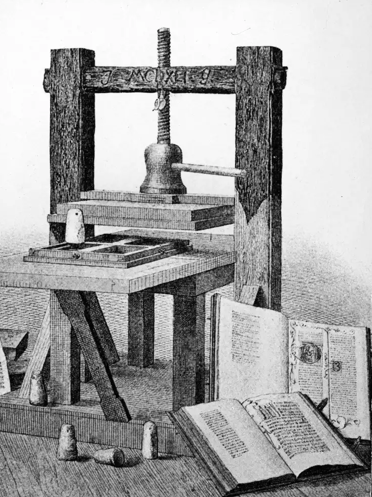
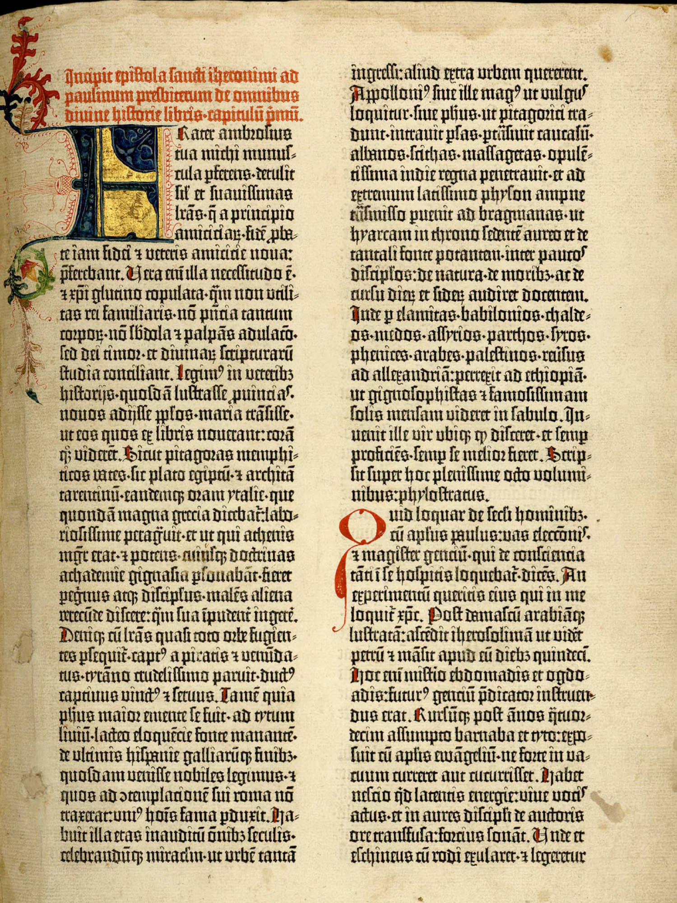
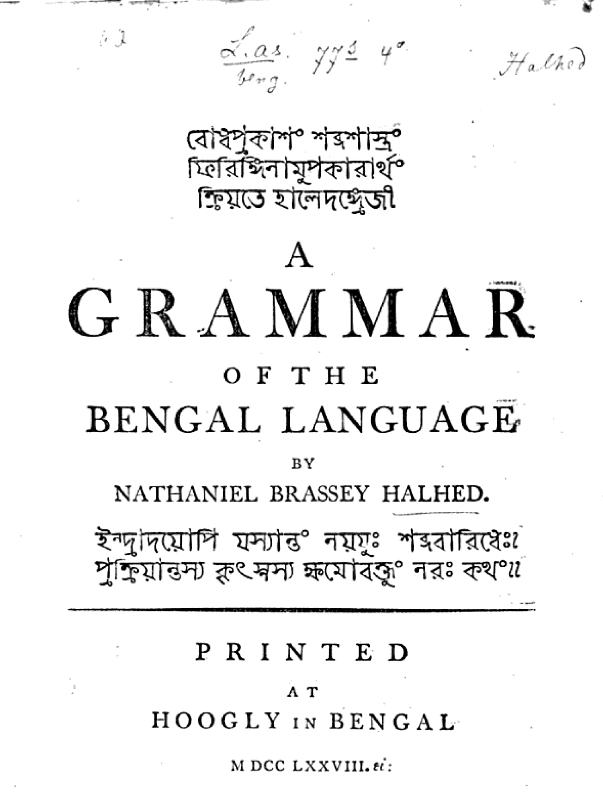
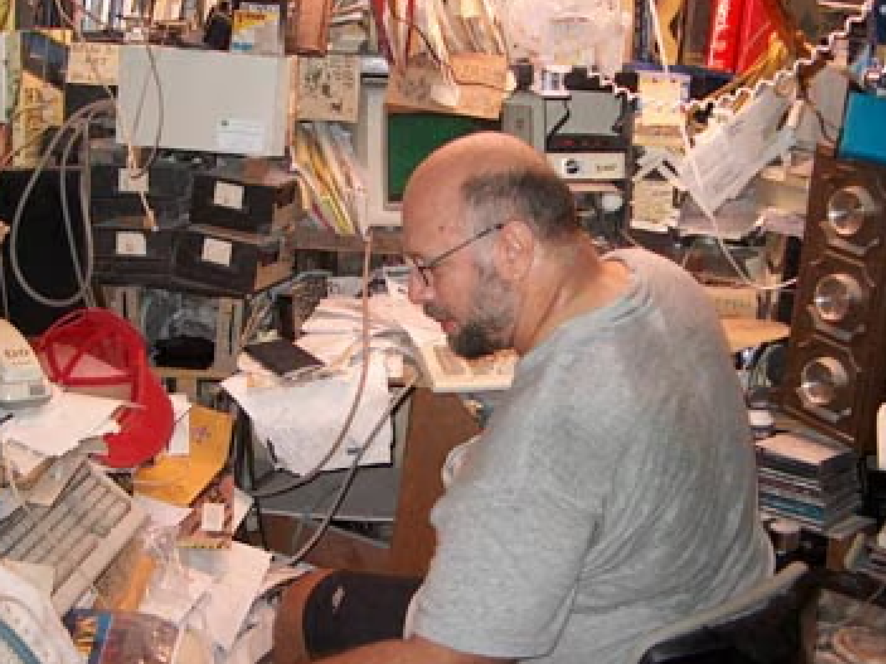
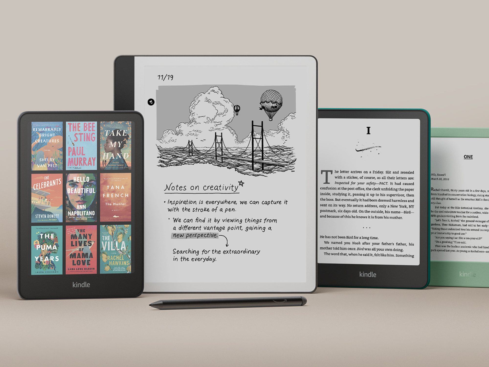
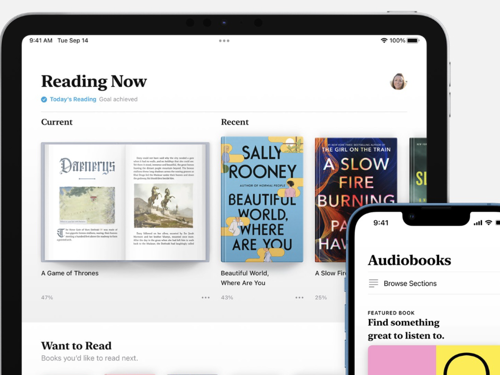
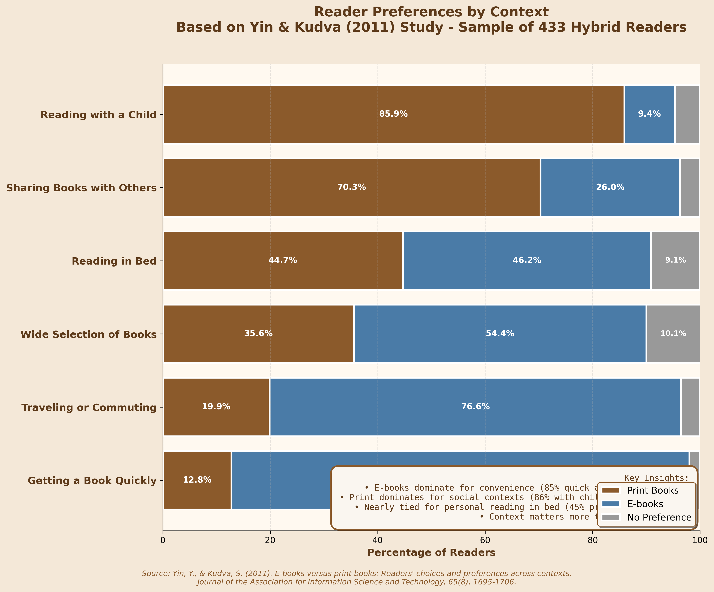
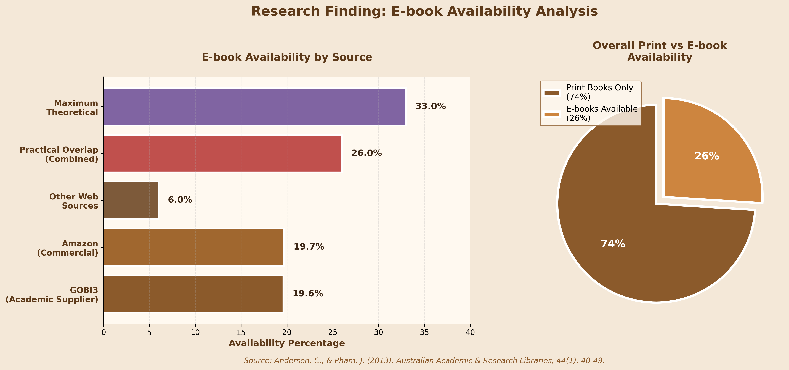

Media Gallery: From Print to Digital
Explore our multimedia collection documenting the journey from the printing press to modern e-books. These videos and audio resources provide visual and auditory insights into printing history, the evolution of books, and the digital reading revolution.
Evolution of Books
What makes a book a book? Is it just anything that stores and communicates information? Or does it have to do with paper, binding, font, ink, its weight in your hands, the smell of the pages? To answer these questions, Julie Dreyfuss goes back to the start of the book as we know it to show how these elements came together to make something more than the sum of their parts.
Video: "The evolution of the book - Julie Dreyfuss"
E-books or Print Books?
E-book or physical book? You may be surprised to hear that for most, old school print on paper still wins. CNBC's Lucy Handley reports.
Video: "Why physical books still outsell e-books | CNBC Reports"
The Book that Changed The World
In 1445 a German goldsmith, Johannes Gutenberg, printed a book called the 42 line bible, known as Gutenberg's bible. It was the first printed book in the western world and it triggered a revolution which allowed modern culture to develop and shape the world we live in today. Today most agree that movable type printing made books widely accessible and ushered in an information revolution in the western world. It Gave voices to unheard ideas, made Martin Luther the first bestselling author, it even introduced the idea of machines "stealing jobs" from workers. To learn more about the printing revolution, the story behind it, and the impact it made on us watch our short documentary The Book That Changed The World.
Video: "The Book that Changed The World"
🎧 Podcast: Why Paper Books Still Beat E-Readers
Closed Stacks explores the sensory differences between paper books and e-readers. The podcast examines how tactile and visual cues impact reading comprehension and memory, citing research. It also discusses the social aspects of physical books, contrasting them with the digital format.
Audio: "Why Paper Books Feel Different"
🎧 Podcast: E-books and Digital Reading Discussion
With the shift from books to ebooks, libraries have lost ownership of their collections. Knowledge is being privatized and monetized by multinational corporations. To correct this trend, we need to think of knowledge, especially the knowledge collectively funded and created at universities like Penn State, not as a private commodity, but as a public good. Jeff Edmunds is Digital Access Coordinator at the Penn State University Libraries, where he has worked for more than 35 years. He helps manage access to the Libraries' millions of digital resources, especially eBooks, and is a fierce champion of open access to information. His texts have appeared in Nabokov Studies, The Slavic and East European Journal, McSweeney's, and Formules (Paris, France), among others. Jeff has decades of experience managing electronic resources in the context of a large academic research library which he now applies in lectures regarding e-books and their privatization. This talk was given at a TEDx event using the TED conference format but independently organized by a local community.
Audio: "Why is knowledge getting so expensive? | Jeffrey Edmunds | TEDx"
Image Gallery: History of Printing
Visual documentation of printing history from Gutenberg's press to modern e-readers.

Gutenberg's Revolutionary Printing Press (1440s)

The Gutenberg Bible printed by Johannes Gutenberg in Mainz in the 15th century.

First Printed Bengali Book - Halhed's Grammar (1778)
Image Gallery: Modern Reading Formats
The evolution from traditional print to modern digital reading devices.

Michael S. Hart founded Project Gutenberg in 1971. He also digitized the U.S. Declaration of Independence which became the first e-book in the world

Amazon's Kindle first released on November 19th, 2007. Priced at $399, it sells out in five and a half hour.

On January 27th in 2010, Apple released iBooks, an e-book application. They sold half a million e-books in less than a month.
Infographic Gallery
Visual data representations from our research findings.

Reader Preferences by Context (Yin & Kudva Study)

Ebook availability Analysis